In contrast, around 600 B.C., Greek philosopher Thales of Miletus had already proposed the universe is rational and could be understood by humans. Around 400 B.C., Plato claimed that heaven is perfect and circle is the most perfect form. Thus, the heaven is in uniform circular motion with the Earth at the center. This is the beginning of the geocentric model.
The simple geocentric model cannot explain the retrograde motion of the planets. Around 140 A.D., Ptolemy proposed his refined geocentric model. (He proposed many refinements. We only talk about the simplest one.)
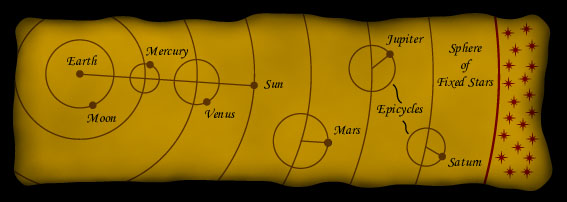
In the Ptolemaic universe, planet moves in a small circle called an epicycle, and the center of the epicycle moves along a larger circle, the deferent, around the Earth. (See a simulation here.) The centers of the epicycles of Mercury and Venus must lie on the line joining the Earth and the Sun. Stars are fixed on an outermost sphere.
This model gives predictions on the positions of the planets within a few degrees from the actual positions. This was generally accepted and the Ptolemaic model dominated the western world for about 1500 years.
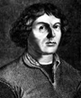 | |
| Courtesy NASA. |
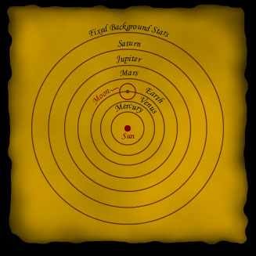
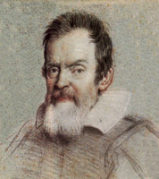 | |
| Courtesy NASA. |
A simplified version of his conflict with Vatican is that Galileo searched for the truth by observing and doing experiments, but Vatican believed the truth could be found in faith. The Inquisition sentenced Galileo to life imprisonment and he was confined in his villa for the last ten years of his life.
Galileo was a great defender of the heliocentric model. He was
the first person who used a telescope to observe the sky. This was
the first time that a person used an instrument to enhance one's
observing capability.
Galileo had four major discoveries:
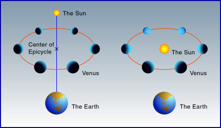
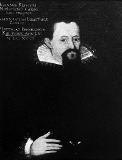 | |
| Courtesy JPL/NASA. |
The Kepler's first law states that the orbits of the planets around the Sun are ellipses with the Sun at one focus. One way to draw an ellipse is to pin down the ends of a string, then use a pencil to stretch out the string. The curve drawn is an ellipse and the positions of the two pins are the foci.
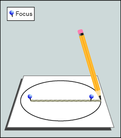
The Kepler's second law states that a line from a planet to the Sun sweeps over equal areas in equal intervals of time. This means when the planet is nearer to the Sun, it moves faster.
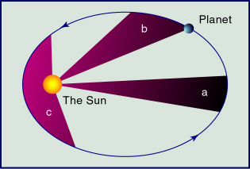
The Kepler's third law states that the square of a planet's orbital period is proportional to the cube of its average distance from the Sun.
The constant in this equation is the same for any objects orbiting around the Sun, including planets, comets and artificial satellites. But if we consider the Moon or artificial satellites around the Earth, we have to use another constant.
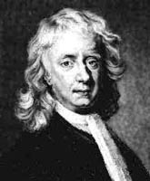 | |
| Courtesy NASA. |
Newton was the founder of modern physics. The story of an apple hitting his head might not be true, but he did write down the first theory of gravitation, one of his many important discoveries.
According to his theory, there is an attractive force between any two massive bodies. The pen, for example, falls to the ground because the pen and the Earth attract each other. If the masses of the two bodies are M1 and M2 and the distance between them is r, then the force F is equal to
where G is the gravitational constant, which is a very small
number. It's why we can't feel the attracting gravitational force
between, say, two persons.
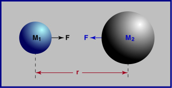
Now, it is not difficult to understand why the Moon orbits around the Earth. If the Earth was not there, the Moon would travel in a straight line, that is, fly away. The Earth and the Moon attract each other, so the Moon "falls" to the Earth, just like a pen does. This falling keeps the Moon in its orbit. Similarly, the Earth and other planets "fall" to the Sun constantly.
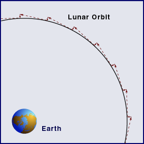
Newton's gravitational theory also predicts that in general, the orbit of an object can be any of the four conic sections: circle, ellipse, parabola and hyperbola; as well as the straight line. Conic sections get their names because they take the shapes of the cross sections of a cone.
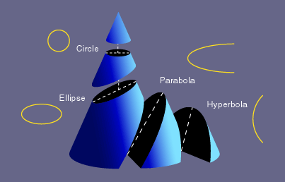
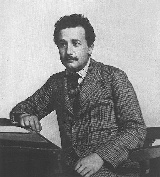 |
| Courtesy NASA. |
who modified Newton's theory and gave us the general theory of relativity. Now, we think the general relativity is not the ultimate truth. It also needs modifications. This is exactly what science is. Someone proposes a theory, others test it against experiments. If the theory agrees with the experiments, we accept the theory. Later, when we have better instruments, we might find that there is some discrepancy between the theory and the experiments that were not detected before. Someone will propose a modified theory and we go around the circle again.